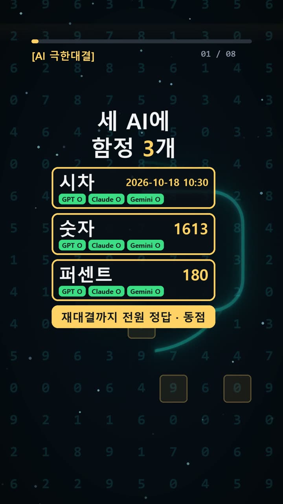
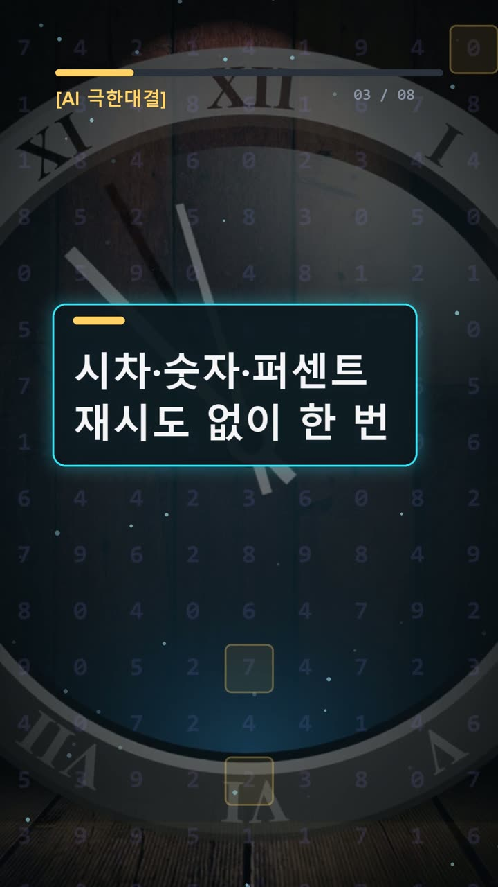
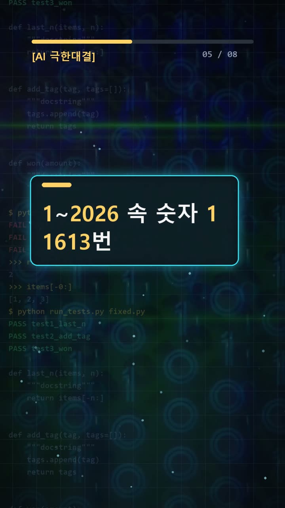

이 포스팅은 쿠팡 파트너스 및 토스쇼핑 쉐어링크 활동의 일환으로, 이에 따른 일정액의 수수료를 제공받습니다.
ai 비교, 뉴욕 시차부터 재대결까지 전원 동점
검증 범위 · 실제 실험 기록 · 이 글의 실험 결과는 같은 질문 1회 시도 기준의 실제 기록이며, 전체 성능 순위가 아닙니다.
실험 프롬프트 원문·실제 답 보기 (무료 공개)서론
해외 동료와 회의 시간을 정하거나 보고서의 증감률을 계산할 때 AI에 짧게 물으면 편하다. 하지만 답을 일정표나 문서에 옮기려면 한 가지가 더 필요하다. 날짜와 계산 조건을 제대로 반영했는지 확인하는 일이다. 문장이 자연스럽다는 이유만으로 숫자까지 맞는다고 판단할 수는 없다.
2026년 10월 19일 실험에서는 GPT·Claude·Gemini가 기본 세트 세 문제를 모두 맞혔다. 더 어려운 세트로 새 대화에서 한 번씩 재실험했지만, 결과는 다시 전원 3점이었다. 승자는 없었다.
이 결과에서 살펴볼 것은 순위보다 답을 확인하는 과정이다. 같은 정답을 냈어도 도구 사용은 달랐다. 이번 ai 비교는 그 차이와 문제에 숨어 있는 조건을 함께 읽어야 한다.

실험 설계
기본 세트는 직장인과 개발자가 접할 수 있는 세 가지 계산으로 구성됐다.
- 서울의 특정 시각을 뉴욕 현지 시각으로 바꾸기
- 1부터 2026까지 적었을 때 문자 1의 등장 횟수 세기
- 200에 증가와 감소 비율을 차례대로 적용하기
시차 문제는 도시 이름만 보고 답하는지, 해당 날짜까지 반영하는지 살펴볼 수 있다. 숫자 문제는 범위 안의 수와 그 안에 쓰인 문자를 구분해야 한다. 퍼센트 문제는 계산할 때마다 기준값이 바뀐다는 조건이 핵심이다.
기본 세트에서 세 모델이 모두 정답을 내자, 더 어려운 세트를 새 대화에 한 번씩 보냈다. 주제는 서머타임 종료 직후의 시차, 문자 0의 개수, 네 단계 퍼센트 계산이었다.
기록상 이 어려운 세트의 정답표는 기본 세트를 보내기 전에 파일로 고정했다. 답을 본 뒤 채점 기준을 바꾸는 일을 막기 위한 장치다. 같은 답이라도 나중에 기준을 달리 적용하면 비교의 의미가 흐려진다.
모델은 GPT-6.1 Sol High의 Work 모드, Claude Opus 5.5 중간의 시크릿 모드, Gemini 4 Argon의 임시 채팅이었다. 각 세트의 질문 전송은 한 번이며, 같은 문제를 다시 물어 답을 고치는 재시도는 없었다.
결과
기본 세트에서 나온 실제 답은 다음과 같다. 모델마다 번호와 줄바꿈은 달랐지만, 답의 내용은 같았다.
| 문제 | 정답표 | GPT | Claude | Gemini | |---|---|---|---|---| | 뉴욕 현지 시각 | 2026-10-18 10:30 | 2026-10-18 10:30 | 2026-10-18 10:30 | 2026-10-18 10:30 | | 문자 1의 개수 | 1613 | 1613 | 1613 | 1613 | | 최종 값 | 180 | 180 | 180 | 180 |
채점 결과는 GPT 3/3, Claude 3/3, Gemini 3/3이었다. 어려운 세트에서도 세 모델 모두 3/3을 기록했다. 기본 세트와 재실험 모두 동점이다.

다만 답이 같다고 풀이 조건까지 같았던 것은 아니다. Gemini는 두 세트 모두 파이썬을 실행했고, GPT는 어려운 세트에서 웹 검색을 사용했다. 따라서 이번 결과를 도구 없이 머릿속 계산만 겨룬 성적으로 읽으면 안 된다.
어려운 세트는 제공된 기록에 개별 질문 전문과 실제 답이 없으므로, 여기서는 확인된 주제와 점수만 다룬다. 전원 정답이라는 결과를 설명하려고 없는 풀이 과정이나 오답 사례를 덧붙이지 않았다.
왜 이런 결과가 나왔나
기록만으로 각 모델의 내부 판단 과정을 알 수는 없다. 대신 정답을 얻으려면 어떤 조건을 지켜야 했는지는 설명할 수 있다.
첫 문제는 날짜가 붙은 시차 계산이다. 질문은 서울의 2026년 10월 18일 23시 30분을 뉴욕의 같은 순간으로 바꾸라고 했다. 정답표의 뉴욕 시각은 같은 날 10시 30분이다. 두 시각의 차이는 13시간이다.
여기서 확인할 대상은 단순한 시간 차이만이 아니다. 뉴욕의 현지 시간대를 그 날짜에 맞춰 적용했는지도 봐야 한다. 도시 사이의 시차를 언제나 하나의 숫자로 외워 두면, 날짜 조건을 놓치기 쉽다.

두 번째는 ‘1이 들어간 수의 개수’가 아니라 ‘문자 1이 나온 횟수’를 묻는다. 11은 두 번, 111은 세 번으로 세어야 한다.
범위를 나누면 정답을 확인하기 쉽다. 1부터 999까지는 300번, 1000부터 1999까지는 1300번, 2000부터 2026까지는 13번이다. 이를 더하면 1613번이다. 특히 1000대에서는 맨 앞의 1도 빠짐없이 포함해야 한다.
세 번째는 매 단계의 기준값을 바꾸는 계산이다. 200에 50%를 더하면 300이다. 올라간 300에서 50%를 빼면 150이고, 남은 150에 20%를 더하면 180이 된다.
50%를 더한 뒤 50%를 뺀다고 처음 값으로 돌아가지는 않는다. 더할 때의 기준은 200이고, 뺄 때의 기준은 300이기 때문이다. 질문에 적힌 ‘매번 직전 값’이 계산 전체를 결정한다.
세 문제 모두 조건을 끝까지 지켜야 정답에 닿는다. 다만 전원 정답이라는 사실만으로, 어떤 설명이나 도구가 정답에 얼마나 기여했는지까지 나눠 평가할 수는 없다.
🧰 오늘의 실험실 생존 세트 — 밤새 실험 돌릴 때 쟁여 두는 것들


결론
이번 실험에서 고를 수 있는 단독 승자는 없다. 실무에서는 모델 이름만 보고 답을 채택하기보다 다음 항목을 확인하는 편이 도움이 된다.
- 시차는 도시와 함께 날짜, 현지 시간대를 확인한다.
- 개수 문제는 수를 세는지 문자를 세는지 구분한다.
- 퍼센트 계산은 단계별 중간값을 남긴다.
- AI가 검색이나 코드를 사용했는지 확인한다.
- 정답 기준을 먼저 정하고 실제 답과 대조한다.
각 세트는 문제 3개에 한 번씩 답한 소규모 실험이다. 두 세트에서 모두 동점이 나왔어도 다른 업무의 정확도나 모델 전체 성능까지 같다고 결론 내릴 수는 없다.
이 글은 실제 실험 기록을 바탕으로 AI 도구와 함께 정리했다.
혹시 글에서 틀린 부분이나 고쳐야 할 부분이 보이면 유튜브·스레드 댓글로 알려 주시면 정말 감사하겠습니다. 바로 확인해서 고칠게요!
실험 원문과 실제 답
아래 질문을 세 AI에 똑같이 1번씩 보냈어요.
아래 3문제에 번호별로 짧게 답해라. 1. 2026-10-18 23:30은 서울 시각이다. 같은 순간, 뉴욕의 벽시계가 가리키는 시각을 그 도시의 현지 시간대 그대로 24시간제로 적어라. 날짜가 바뀌면 바뀐 날짜를 포함해라. 다른 말은 쓰지 말고 YYYY-MM-DD HH:MM만 적어라. 2. 1부터 2026까지 정수를 십진수로 빠짐없이 적는다. 1과 2026을 모두 포함한다. 이렇게 적은 것 전체에서 문자 1이 등장하는 횟수는 몇인가? 11처럼 한 수에 1이 두 번 있으면 두 번 모두 센다. 100의 1은 한 번이다. 숫자만 적어라. 3. 처음 값은 200이다. 이 값에 그 값의 50%를 더하고, 올라간 값에서 그 값의 50%를 빼고, 남은 값에 그 값의 20%를 더한다. 퍼센트는 매번 직전 값에만 곱하고, 50과 50과 20을 더하거나 빼서 한 번에 계산하지 마라. 최종 값만 정수로 적어라.
정답(실험 전에 먼저 정함): 2026-10-18 10:30 / 1613 / 180
| AI | 실제 답 |
|---|---|
| GPT | 1. 2026-10-18 10:30 2. 1613 3. 180 |
| Claude | 1. 2026-10-18 10:30 2. 1613 3. 180 |
| Gemini | 2026-10-18 10:30 1613 180 |
🛒 다시 보기: 오늘의 생존 세트
🎙️ AI 음성이 궁금하다면
우리 채널 내레이션은 타입캐스트를 쓰지만, 영어·다국어 AI 음성을 실험해 보고 싶다면 ElevenLabs도 많이 쓰여요.
[광고·제휴] ElevenLabs 둘러보기🎬 쇼츠로 다시 보기 · 🧵 함께 이야기하기
🧵 스레드 @alligatorxor에서 오늘 실험 이야기 나누기 · ▶ 유튜브 새AI실험노트 다른 쇼츠 보기 · 📒 실험노트 홈